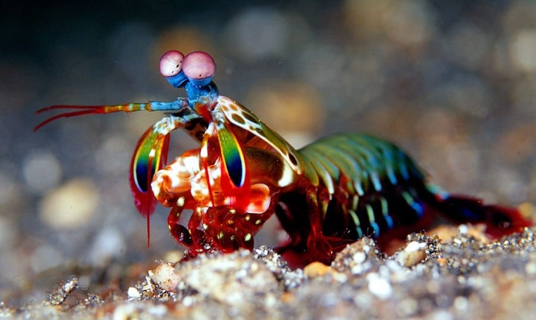
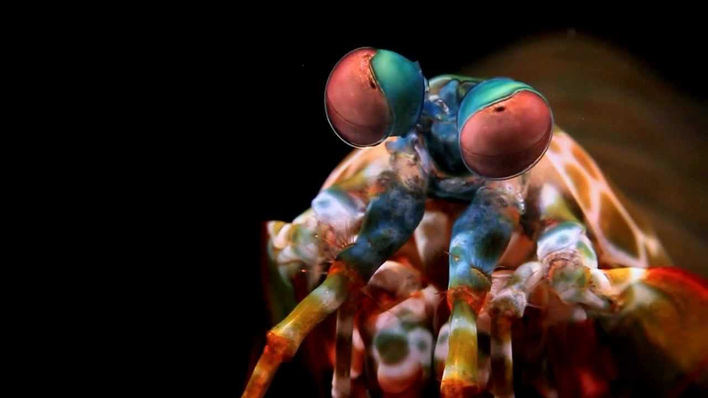
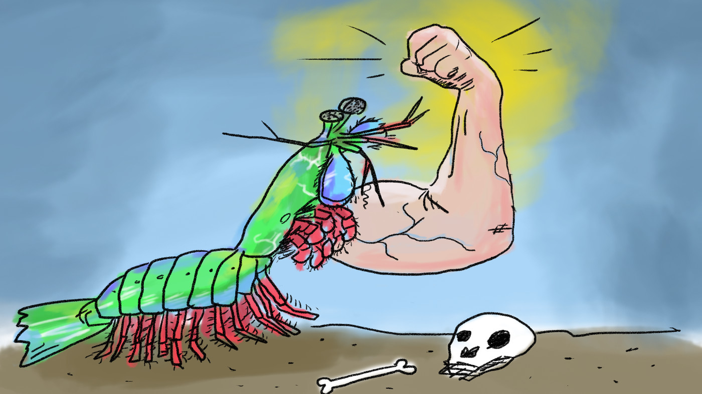

Fatos sobre o Stomatopoda
Informações Gerais
Stomatopoda (ou estomatópode), também conhecidos como tamarutacas, lacraias-do-mar ou camarões louva-deus (embora não sejam de fato camarões), é uma ordem de crustáceos marinhos que habitam águas tropicais e subtropicais. A principal característica desses animais é o segundo par de apêndices toráxicos, que são utilizados tanto como ferramenta quanto arma.
Super visão
Os estomatópodes possuem o mais complexo sistema de visão de cores do reino animal. Eles conseguem detectar variações na polarização da luz e enxergam 12 cores primárias (enquanto nós, humanos, exergamos apenas 3). Sua super visão vem sendo fruto de várias pesquisas científicas e serviu de inspiração até mesmo para uma câmera capaz de enxergar tecidos cancrosos e atividade cerebral.
Super soco
Além da super visão, os estomatópodes também são capazes de desferir um dos mais rápidos e violentos golpes do reino animal. Suas patas podem esmagar suas presas em uma intensidade de aproximadamente 60 kg/cm² e sua aceleração pode atingir 720 km/h, tal qual um tiro de arma de fogo.
Luvas de adamantium
Tamanho impacto causado por seus super socos causaria danos aos "punhos" dos estomatópodes, não fosse a estrutura especial que a natureza lhes deu. Cientistas descobriram que essa estrutura é feita de duas camadas:
- A superior, constituída de biocerâmica (carbonato de cálcio amorfo)
- A inferior, constituída de biopolímero (proteínas e quitina)